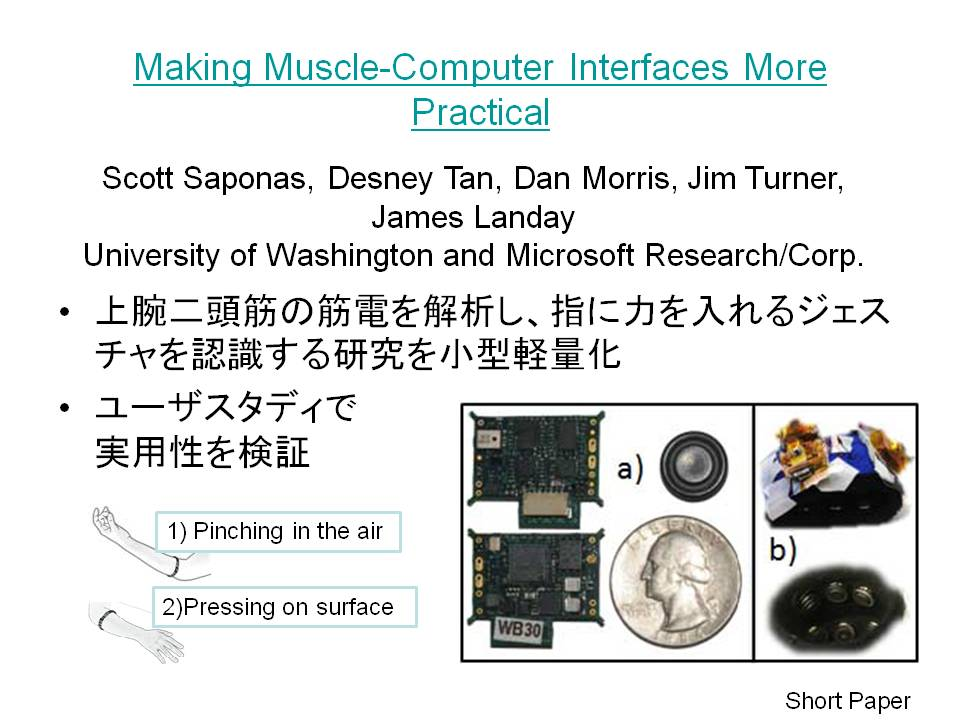
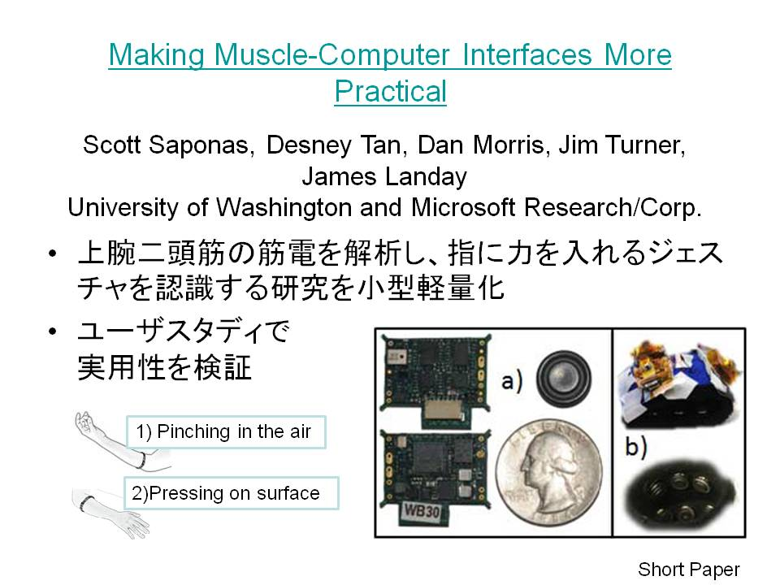

ぴぴつい連携概要
お手本スライドでは、
・タイトル「Making Muscle-Computer Interfaces More Practical」
・本文2行「上腕二頭筋の筋電を解析し、指に力を入れるジェスチャを認識する研究を小型軽量化」「ユーザスタディで実用性を検証」
が抽出され、以下の2ツイートが生成されます。
自分でツイート内容を編集したい場合は、スライドの発表者コメント欄に次のようなタグを書き込む必要があります。
この内容が書き込まれていた場合、ツイートは自動生成されず、次のようにつぶやかれます。

・タイトル「Making Muscle-Computer Interfaces More Practical」
・本文2行「上腕二頭筋の筋電を解析し、指に力を入れるジェスチャを認識する研究を小型軽量化」「ユーザスタディで実用性を検証」
が抽出され、以下の2ツイートが生成されます。
#allchi [1]Making Muscle-Computer Interfaces More Practical
#allchi [1]上腕二頭筋の筋電を解析し、指に力を入れるジェスチャを認識する研究を小型軽量化/ユーザスタディで実用性を検証
#allchi [1]上腕二頭筋の筋電を解析し、指に力を入れるジェスチャを認識する研究を小型軽量化/ユーザスタディで実用性を検証
自分でツイート内容を編集したい場合は、スライドの発表者コメント欄に次のようなタグを書き込む必要があります。
<twitter>
pp_twi:#allchi Making Muscle-Computer Interfaces More Practical
pp_twi:#allchi UIST2009で発表されたMuscle-Computer Interface（上腕二頭筋の筋電を解析し、指に力を入れるジェスチャを認識する）を小型軽量化、ユーザスタディで実用性をしっかり検証
</twitter>
pp_twi:#allchi Making Muscle-Computer Interfaces More Practical
pp_twi:#allchi UIST2009で発表されたMuscle-Computer Interface（上腕二頭筋の筋電を解析し、指に力を入れるジェスチャを認識する）を小型軽量化、ユーザスタディで実用性をしっかり検証
</twitter>
この内容が書き込まれていた場合、ツイートは自動生成されず、次のようにつぶやかれます。
#allchi Making Muscle-Computer Interfaces More Practical
#allchi UIST2009で発表されたMuscle-Computer Interface（上腕二頭筋の筋電を解析し、指に力を入れるジェスチャを認識する）を小型軽量化、ユーザスタディで実用性をしっかり検証
#allchi UIST2009で発表されたMuscle-Computer Interface（上腕二頭筋の筋電を解析し、指に力を入れるジェスチャを認識する）を小型軽量化、ユーザスタディで実用性をしっかり検証

ツイート自動生成の仕様
・先頭に#allchiがつく
・タイトルで1 tweet（140文字以降は切り捨て）
・メイン説明箇条書きで1 tweet（140文字以降は切り捨て）
・改行は"/"に置き換える。
・タイトルと箇条書きをひもづけるため、スライド番号で通し番号がつく。（サーバ遅延とかでtweetの順番が入れ替わっても大丈夫なように。）
PowerPointではテキストボックスが設置した順番にインデックスを持っており、ぴぴついではインデックス0と1のボックスをそれぞれタイトルとメイン説明として扱っているそうです。（著者名のボックスは後から追加して上に動かしたのでインデックス2です。）
お手本スライドをコピペして使わなかった場合、インデックスがずれて、ぴぴついが誤動作を起こす可能性があるのでなるべく避けてください。
・タイトルで1 tweet（140文字以降は切り捨て）
・メイン説明箇条書きで1 tweet（140文字以降は切り捨て）
・改行は"/"に置き換える。
・タイトルと箇条書きをひもづけるため、スライド番号で通し番号がつく。（サーバ遅延とかでtweetの順番が入れ替わっても大丈夫なように。）
PowerPointではテキストボックスが設置した順番にインデックスを持っており、ぴぴついではインデックス0と1のボックスをそれぞれタイトルとメイン説明として扱っているそうです。（著者名のボックスは後から追加して上に動かしたのでインデックス2です。）
お手本スライドをコピペして使わなかった場合、インデックスがずれて、ぴぴついが誤動作を起こす可能性があるのでなるべく避けてください。